2D raster - GIMP
For simple image editing, I like to use the software installed in my computer, i.e. Microsoft Paint and Paint 3D. The purpose is usually to crop faces or objects, integrating them into a bigger picture, and touching up using the brushes to make them more natural. Here is an example from last year:
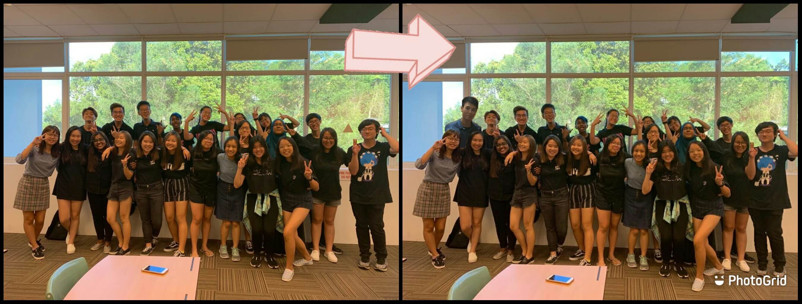
GIMP is introduced to me in DFAB. It is also an image editor, but with a plethora of features such as layers, blur background, lock position… and many more! I get to make use of the layers to shift my elements around anytime, unlike in Microsoft Paint when the object is fixed once I click elsewhere. This is how I make a dog appear to be moving from behind a plunge board using GIMP:
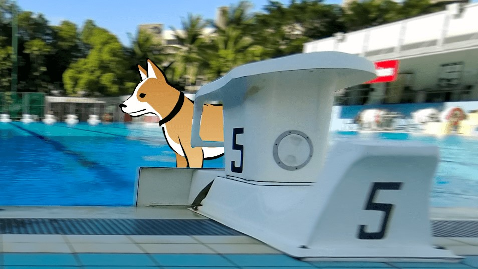
Peek-a-boo! Click on the arrows to view the process.
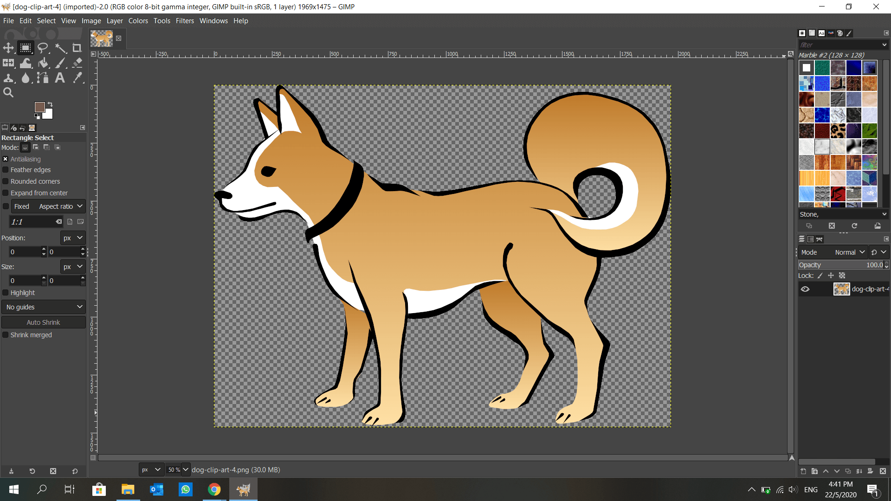
I took an image of a dog from clipart-library.com.
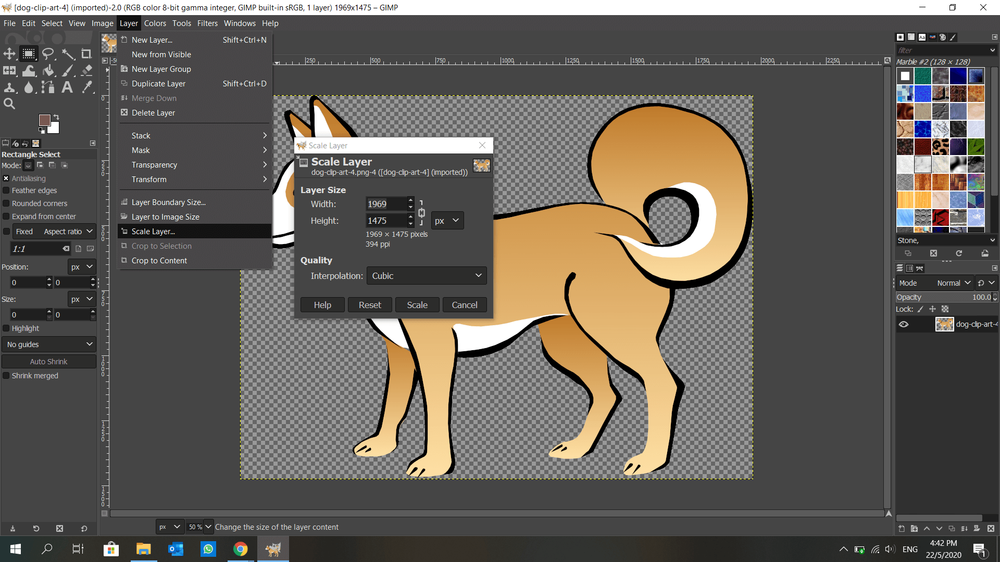
Resized it using Scale Layer.
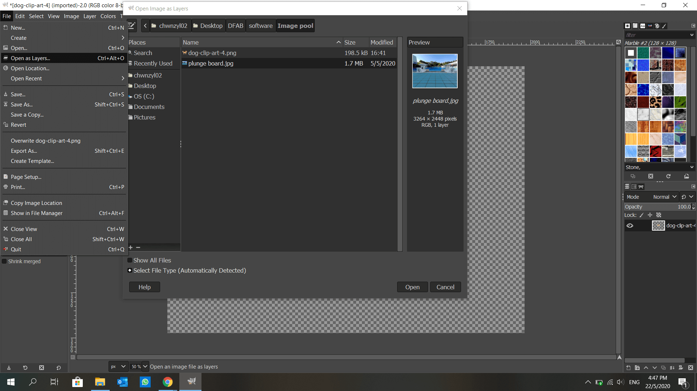
Opened an image in my gallery as another layer.
Rescaled layer and clicked on “Fit Canvas to Layers” under Image.
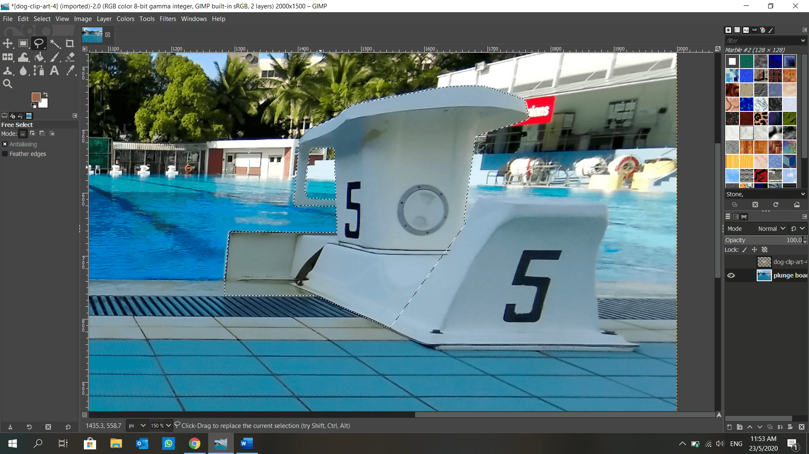
Cropped out the plunge board using Free Select Tool. Then I copied and pasted it.
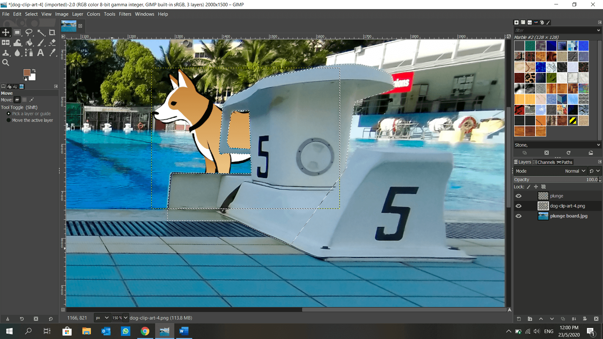
Added a New Layer and anchored the pasted image on it.
With the dog image sandwiched between the 2 layers, the dog is now seen “hiding” behind the plunge board.
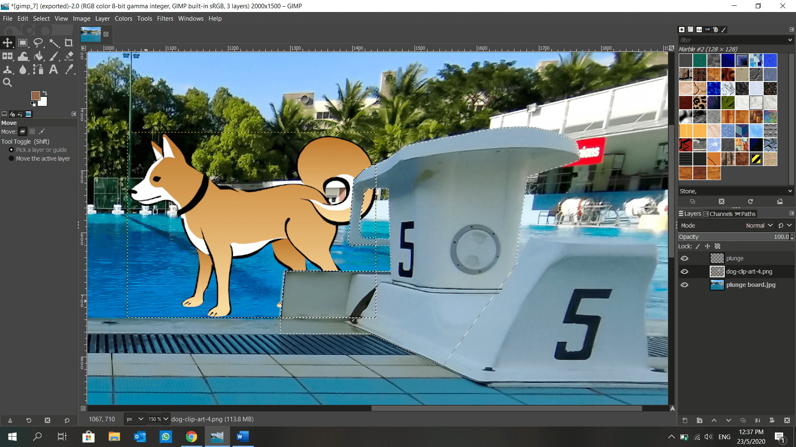
I can now move the dog as if it walked on water, using Move Tool.
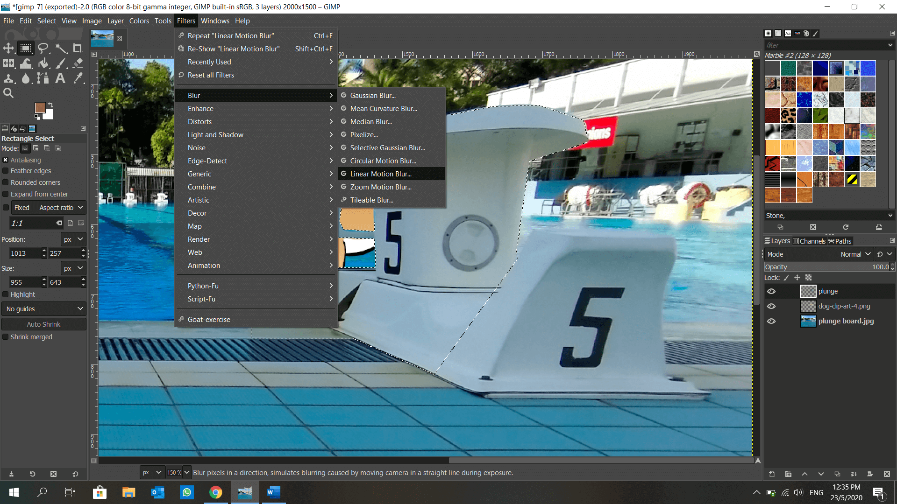
Made the background blur to focus on the dog, using Linear Motion Blur.
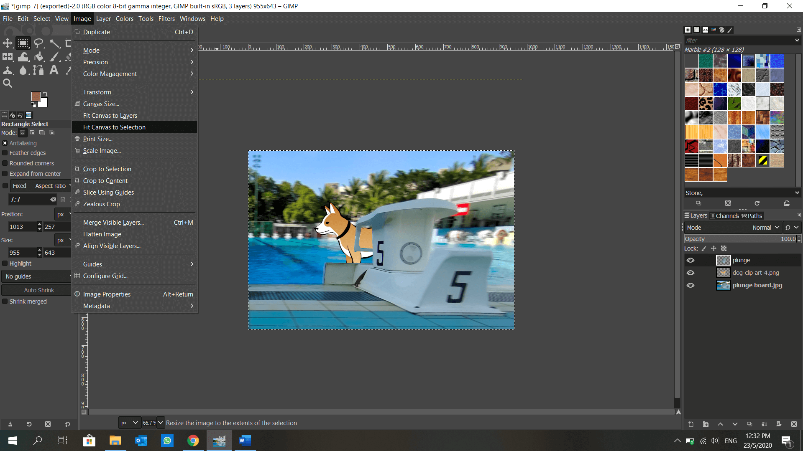
Using Rectangle Select Tool, I selected the area which I want to save, and clicked Fit Canvas to Selection under Image.
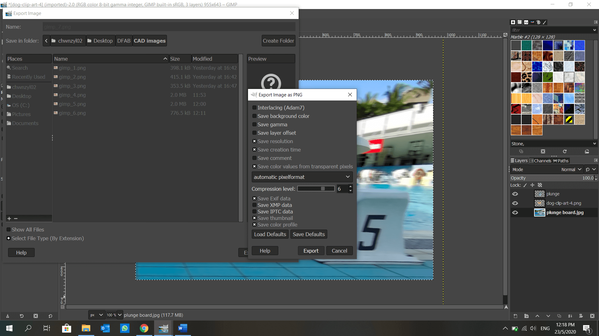
Lastly, I exported my work as “.png”
2D vector - Inkscape
3D - Fusion 360